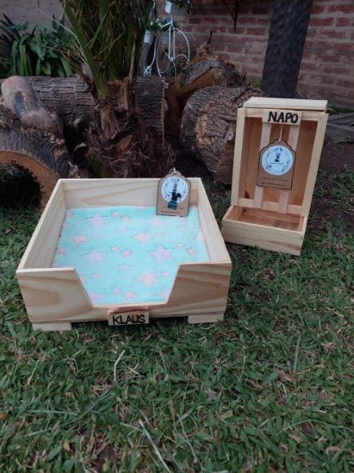

¡Accesorios para tu mascota!
Bandejas sanitarias
LA solución que estaban esperando!!! Las nuevas Bandejitas sanitarias con: ♡Rejilla que aisla del sustrato evitando infecciones urinarias en conejas, enfermedades de la piel y suciedad en las patas. ♡Reposapatas incorporado para que la rejilla no lastime. ♡Ayuda a que tu conejito haga sus necesidades en bandeja!!... A veces los cones son TAN limpios que no quieren apoyar sus patitas en el sustrato sucio, y hacen en cualquieeer lado. Además, no hace falta estar cambiando todo el tiempo el sustrato, lo podes hacer cada 2/3 dias! (Comprobada su eficacia en guarderia orejones😏) Medidas: 37x27x10cm 🚚Envios a todo el pais!
Pee Pads
â„Llego el frioooo con todoâ„🥶 Tu cone ya tiene su pee pad de polar calentito para pasar el invierno??🤔 Hicimos mas modelitos🤠Las pueden usar como camita o como sustrato⤠Son reutilizables y ecológicas 🌠Se lavan super facil! Medida:50x60!
Herneras
les podemos presentar nuestras heneritas de madera virgen aptas para 🐰🐇 Son LA solución para que el heno no este desparramado por toooda la casa! 🐰Con bandejita ideal para que no haya desperdicio! Puertita con bisagra para cargar el heno! ➡️Deslizá para ver mas fotos 💟Esperamos que les gusten Pueden ir reservando la suya💌 Envios a todo el pais🚚
Tazas
Ahora algo para nosotros que amamos los cones🤗 Miren estas tazitas de 🰠😠No son muy hermosas??
Camitas
Por acá les presentamos nuestra nueva camita de madera para ğŸ‡ğŸ˜â¤ 🐰Camita confort con piso impermeable por si hacen pis para que no mojen la madera! Claaave🙠👉Tienen taquitos de madera para que no esté en contacto directo con el piso y evitar que se moje! 🰠Miden 40×40! 💌Reserva la tuya ğŸ“Son a pedido, nos estamos stockeandoâ£

Bowls
Mueran de amor con nuestra nueva linea de ceramicağŸ˜ğŸ’• Estos bowls de orejas para ğŸ°ğŸ° son lo mas!ğŸ¤â¤ ğŸ‡Los pueden usar para balanceado o agua! ğŸ‡100% artesanales hechos a mano! 😏Gracias a mis modelos😏
.png)
.png)
.png)